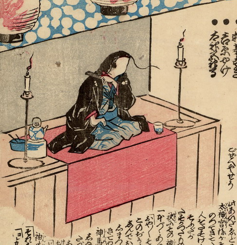

落語家に扮して高座にあがる鯰。波模様の着流しに、黒の羽織という姿である。左手に扇子を持っている。
出典：親書誌：U426_nichibunken_0216：二日はなし；フツカバナシ／日付：2010／資源識別子：U426_nichibunken_0216_0001_0000
Copyright (c)2010- International Research Center for Japanese Studies, Kyoto, Japan. All rights reserved.